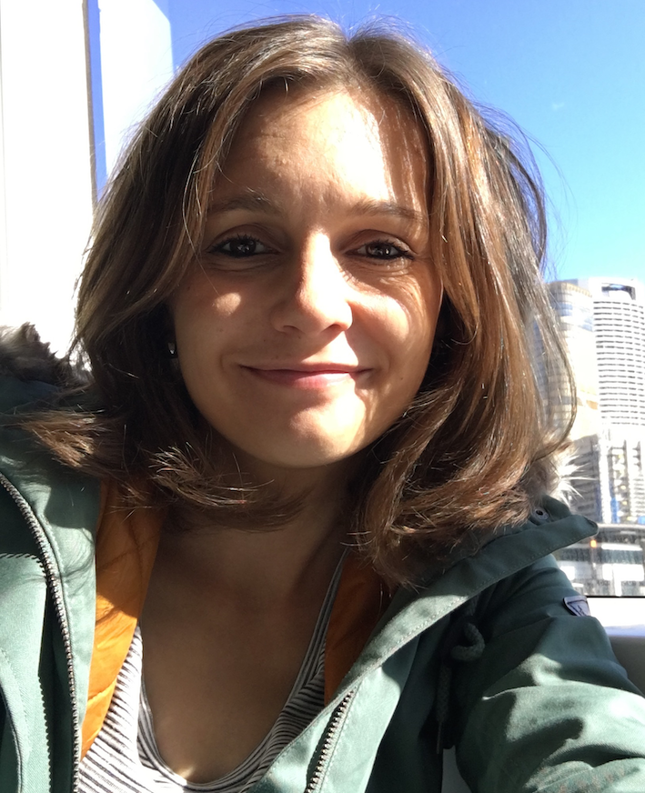
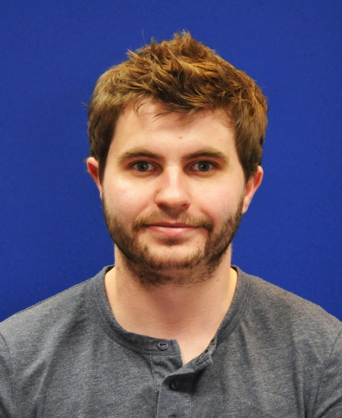
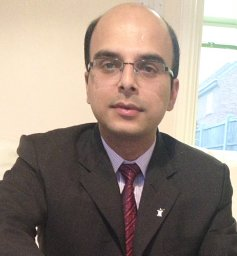
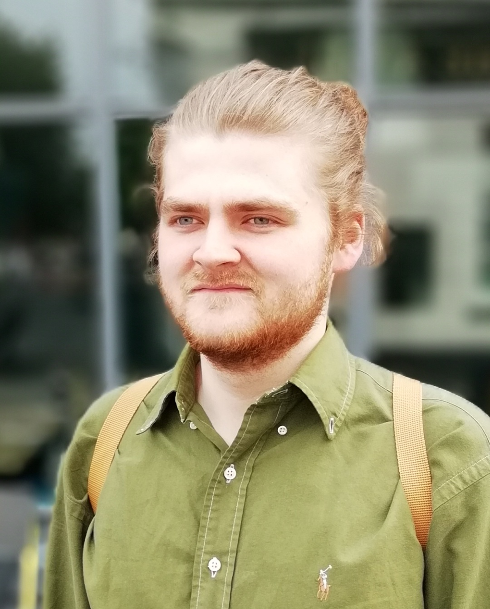
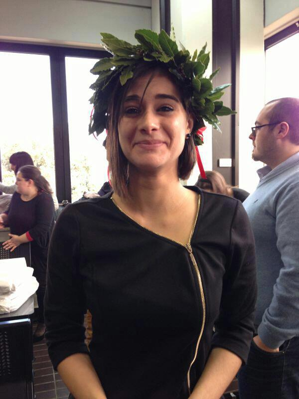

Dr Nina Dethlefs
, Senior Lecturer
Natural language processing, interactive systems, artificial intelligence
Full profile

I am a Senior Lecturer in Computer Science at the University of Hull, Yorkshire, UK, where I lead the Big Data Analytics Research group.
I am also currently Director of Research for Computer Science and Technology and Aura CDT Theme lead for "Big data, sensors and digitalisation for the offshore environment".
Before coming to Hull, I was a Research Fellow in the The Interaction Lab at Heriot-Watt University, Edinburgh. I have a PhD in Computational Linguistics from the University of Bremen, Germany.
My research interests lie at the intersection of machine learning and natural language processing (NLP), particularly in the areas of data-to-text and natural language generation (NLG), interactive systems, assistive technologies,
domain transfer and adaptability for data analytics in a wider AI context. I have spent the last few years working with neural networks as a primary algorithm family but have previously worked with graphical models, clustering and
reinforcement learning.
Most recently I have become interested in applying AI and NLP in "useful" contexts such as mental health and
the environment, particularly towards sustainability. I am interested in the digitalisation of the offshore wind industry to
make wind turbines more reliable. I am also interested in the effects of human activity on water quality and the forecasting of
natural events such as floods. When I have time I do some research in digital conservation using AI and text classification.
Dr Alex Turner
, Affiliate, now Assistant Professor at Nottingham University
Artificial intelligence, healthcare, complex dynamical systems
Full profile

Alex is an Assistant Professor in the School of Computer Science. at the University of Nottingham. Prior to this, he was a lecturer in Computer Science at the University of Hull and a Post Doctoral Researcher in the Department of Electronic Engineering at the University of York, where he obtained his PhD. His MSc was awarded in the Department of Computer Science at the University of York.
Alex has previously taught modules in procedural programing, object-oriented programming and artificial intelligence.
Alex's main research interests are focused on the development of new technologies to improve the diagnosis and treatments of movement disorders,
with a particular focus on gait and ambulation. Sufferers of movement disorders find a distinct amount of heterogeneity in their
symptoms day by day, and typical treatment updates are sparse due to both the complicated nature of the diseases and the
limited face to face time available with specialists. To try and solve this, novel sensors in combination with machine learning
can be used to provide day to day updates of a patient's movement, which can use used to develop autonomous physiotherapy
updates and well as guide changes in treatment.
In addition he also works in the development of transparent machine learning
models which can provide a rationale for their decision making process. He is also interested in the application of machine
learning in the biological sciences both to improve disease diagnosis and on understanding biological evolution and climate change.
Dr Bikash Gyawali
, KTP Associate
Artificial intelligence, data analysis, natural language processing
Full profile

I am a researcher working in Natural Language Processing and Big Data Systems. Over the last five years, I have worked as
a full time researcher on several topics related to Natural Language Understanding and Generation, Deep Learning, Big Data
Analysis and Text Mining of scientific documents.
Bikash is currently an KTP Associate with Spencer Ltd and is applying modern deep learning techniques to text analysis
and document classification to optimise Spencer's workflows and productivity.
Bikash holds a PhD from the Université de Lorraine in France (2015).
Lydia Bryan-Smith
, PhD student
Artificial intelligence, machine learning, environmental modelling, social media analysis
Full profile
Lydia is a PhD researcher in Computer Science at the University of Hull, previously having graduated from Hull with an MSc.
Her PhD project investigates deep learning algorithms for real-time flood prediction from multiple disparate data sources. An
underlying idea of Lydia's research is to combine traditional hydro-dynamic flood models with modern AI techniques to achieve
a balance between high accuracy of forecasts and efficient predictions. The learning models are trained with information from
different sources including heights maps of the geographical area, dynamic rainfall radar data, as well as social media posts.
Joyjit Chatterjee
, PhD student
Artificial intelligence, wind turbines, green energy, natural language processing
Full profile
Joyjit is a Final Year PhD. Computer Science Researcher at the University of Hull, Yorkshire, UK. He is presently
researching in the area of tackling climate change with AI, by helping make wind energy sources more reliable, through
explainable and intelligent decision support in their operations & maintenance. During his PhD., he has closely collaborated
with leading wind farm operators and research organisations as a part of the Aura Innovation Centre, UK’s PhD. cluster. He is a
Chartered Engineer, MIET, MIEEE, AMIE, Jr. Member of Isaac Newton Institute for Mathematical Sciences, Cambridge & Life Member of
Indian Science Congress Association. He is a certified Professional Scrum Master (PSM-1) with a sound understanding of the
industry. Joyjit also holds a Postgraduate Diploma in Research Training (Hull, UK), Professional Certificate in AI (Oxford, UK),
and Bachelors in Electronics & Communication Engg. (Gold Medalist-Amity University, India). He has published an array of papers
in Computer Science & Engineering (including in leading A*/A ranked AI conferences/workshops such as NeurIPS, KDD, IJCNN, ECAI
etc., and reputed journals by Wiley, IOP etc.). As a global researcher, he has co-authored papers & filed patents with reputed
academicians from across Europe, North America and Asia in AI, NLG & Signal Processing, and delivered talks at leading research
institutions globally (such as Carnegie Mellon University, ETH Zurich etc.). Joyjit was also a Visiting Researcher at Tamkang
University, Taiwan on a government funded research project. Joyjit regularly serves on the programme committee/as reviewer for
leading international conferences/workshops (such as ICLR, NeurIPS etc.) and high-impact journals.
Joyjit is the recipient of several honours & awards including PhD. Scholarship (Hull, UK), Employability Award for Postgraduate
Researchers (Hull, UK), funding towards conference presentations from reputed international organisations such as IEEE CIS,
Microsoft Research etc., Scholarship for the Global Impact Challenge 2020 (Nudge, Netherlands), Young Researcher Award
(IEEE UK & Ireland Section), Gold Medal and Scholarship (Amity University, India), Alumni Achiever Award for Outstanding
Contribution in Education (Amity University, India) and several other awards, certifications and honours from governments,
industry and academia. His research interests span Deep Learning, Natural Language Generation, Data Analytics, Knowledge Graphs,
Causal Inference and Time-Series Analysis.
Onatkut Dagtekin
, PhD Student
Artificial intelligence, machine learning, environmental modelling, natural language processing
Full profile
Onatkut is currently a PhD student in Computer Science at the University of Hull. He holds an MSc degree from the University
of Manchester. For his PhD project, he
investigates deep learning techniques to discover key predictors of water quality from
high-frequency sensor outputs. These techniques aim to be as much as possible independent of particular geographical
locations but rather rooted in the environmental context in which they occur. This can make them potentially transferable
across different water bodies and regions of the world, including e.g. phenomena such as proximity of water to farmland,
caves, industrial activity, impact of natural phenomena, such as land slides, floods, and other weather events. The
overarching goal of the project is to be able to understand and predict the impact of human activity on aquatic
ecosystems and wildlife.
Albert Dulian
, PhD student, now also Deep Learning Scientist at
Vicon
Deep learning, computer vision, reinforcement learning, self-driving vehicles
Full profile
 Albert is currently at PhD student at the University of Hull and a Deep Learning Scientist at Vicon. His
area of research focuses on exploring how Machine Learning algorithms, specifically novel Deep Neural Networks can be utilised
within the domain of Autonomous Transportation to improve current approaches towards short-term motion prediction.
Albert is currently at PhD student at the University of Hull and a Deep Learning Scientist at Vicon. His
area of research focuses on exploring how Machine Learning algorithms, specifically novel Deep Neural Networks can be utilised
within the domain of Autonomous Transportation to improve current approaches towards short-term motion prediction.
An important contribution of his PhD has been on the short-term motion prediction of nearby agents in an autonomous driving
scenario. This kind of research is essential for the safety of passengers, pedestrians and other agents. In contrast to existing
approaches, Albert has demonstrated the effectiveness of Capsule Networks for the task, which excel particularly due to their
ability to maintain hierarchical relationships between image features.
Matthew Hartley
, PhD student
Deep learning, radar scan analysis
Full profile
Matt is currently a PhD researcher in Computer Science working on distinguishing birds from other non-biological targets
from high-frequency radar data, as well as classifying different types of bird species. He is researching novel deep learning
algorithms, particularly from the area of computer vision, and their efficient application to noise reduction and classification.
George Lacey
, PhD student
Deep learning, computer vision, reinforcement learning, self-driving vehicles
Full profile

George is currently a PhD student in Computer Science at the University of Hull. His research focuses on transparency
in machine learning through the investigation of biologicall-inspired networks, such as
epigenetic networks which are applied to solve tasks in complex dynamical systems.
A key contribution of his PhD has been the application of epigenetic layers within deep neural network architectures to
increase the transparency of the latter. A deeper understanding of the model's inner workings can be gained by
distinguishing parts of the evolving network that are crucial during prediction tasks and those which have a negligible effect
and can be
deactivated for increased efficiency during training.
Luana Mincarelli
, PhD student
Marine biology
Full profile

The aim of my PhD project is to investigate how different combined stressors act in the environment, with particular attention to biological responses in mussels.
I obtained an MSc in Marine Biology at Marche Polytechnic University (Ancona, Italy), working on a project concerning the modulatory effect of climate change (global warming and ocean acidification) and heavy metals exposure on biological responses of the Mediterranean mussel Mytilus galloprovincialis.
The first part of my PhD involves the exposure of the blue mussel Mytilus edulis to several stress compounds. At the moment, I’m studying how different temperatures and phthalate exposure can affect biological responses of blue mussels. Finally, the second part of my project will involve data analysis: at the end of my PhD, I would like to have collected enough data to use artificial intelligence and machine learning for simulating future climate conditions and consequence for mussel populations.
Eva Sousa
, PhD student
Artificial intelligence, medical imaging
Full profile
 I Licentiated in Nuclear Medicine in 2006 from Escola Superior de Tecnologia da Saúde de Lisboa – Instituto Politécnico de Lisboa (ESTeSL-IPL). Following, I finnished my MSc in Biophysics and Medical Physics in 2009, from Instituto de Biofísica e Engenharia Biomédica, da Faculdade de Ciências da Universidade de Lisboa (IBEB-FCUL. Concluded one Biomedical Engineering Specialization in 2014 from Faculdade de Ciências e Tecnologias da Universidade de Coimbra (FCTUC). I am presently student PhD Student in University of Hull.
I Licentiated in Nuclear Medicine in 2006 from Escola Superior de Tecnologia da Saúde de Lisboa – Instituto Politécnico de Lisboa (ESTeSL-IPL). Following, I finnished my MSc in Biophysics and Medical Physics in 2009, from Instituto de Biofísica e Engenharia Biomédica, da Faculdade de Ciências da Universidade de Lisboa (IBEB-FCUL. Concluded one Biomedical Engineering Specialization in 2014 from Faculdade de Ciências e Tecnologias da Universidade de Coimbra (FCTUC). I am presently student PhD Student in University of Hull.
From September of 2008 to September of 2018, I was full-time Assistant Lecturer in ESTeSL-IPL. Lecturing in the degrees of Nuclear Medicine and Medical Imaging and RadiotherapyDuring this time, I collected some experience of lecturing in different Institutions abroad under Erasmus Program in 2010 (Karolinska Institutet – Sweden); 2012 and 2013 in NuPHiCos (Medical University of Plovdiv – Bulgaria); 2015 (Institute Paul Lambin – Brussels). And From 2012 to 2018 I coordinate the entrepreneurship Program of ESTeSL-IPL.
I collaborated with some research teams and projects and have being member of Member of the Research Groups GI-MOSM and GIRES. I have collaborated in some funded research projects by Instituto Politécnico de Lisboa, with the fellowship (IDI&CA) do IPL – 2016.
As hobbies I am also a writer, blogger and volunteer.


{kind=link}